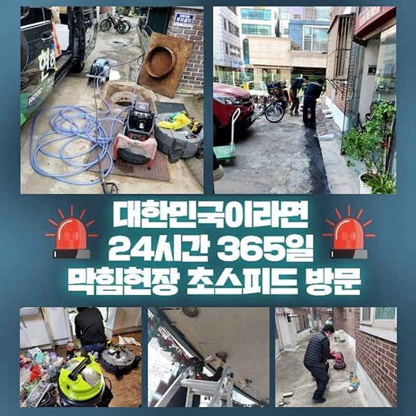
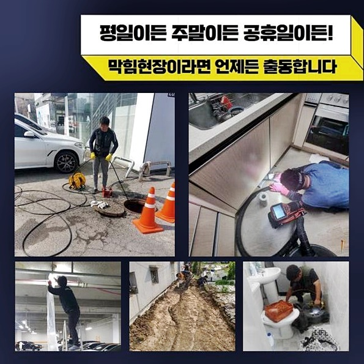
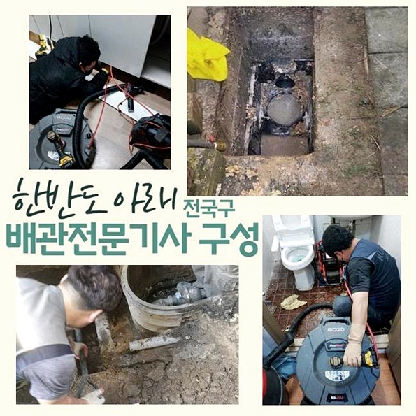
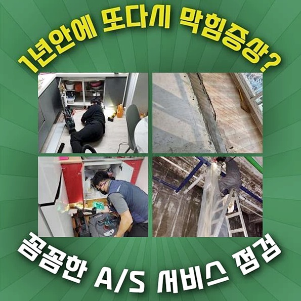
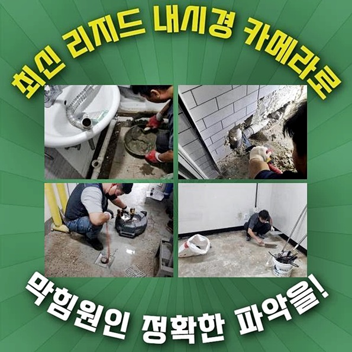
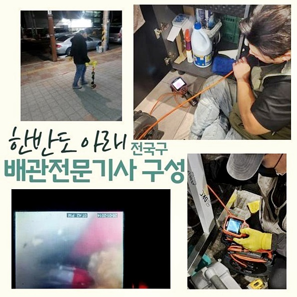

🏠 안산 해양동싱크대배수구역류 새솔동 집수정청소 수리업체
안산 새솔동 싱크대막힘 전문 시공 후기

📋 작업 개요
- 위치: 안산 새솔동, 새솔동, 안산
- 서비스 유형: 싱크대막힘, 하수구막힘, 배관막힘, 집수정막힘, 역류해결, 배관청소, 고압세척
- 작업 일시: 2024. 6. 2. 8:48
- 업체명: 하수구수사대 (010-5615-2118)
🔍 문제 상황
안산 해양동싱크대배수구역류 새솔동 집수정청소 수리업체
일상 중에 갑작스레 다양한 문제들이 발생되면 여러방면에서 많은 피해들이 생겨나겠죠?
금일에는 의뢰인님의 작업들을 살펴보면서 증세들을 알아보는 시간을 설명드리고자하니 관심을 기울이시면 요긴하게 쓰일거라는 생각해요
하수도에 여러 이물들이 자리하면 통수가 어렵습니다
증상들이 발발한 경우엔 재빨리 조치해야 불편을 줄이면서 시정하는것이 가능해요
증상이 발현되었을때 무턱대고 뾰족한 것들을 이용해서서 풀어가지말고 연유를 확실히 인지하여 청소를 밟아나가는것이 하는 바람입니다
어떻게 연유를 알아내고 무슨 기기들을 통하여 배수관의 오염물을 세척하는지 지금부터 확인해볼게요!
화장실내부서 야기된 석회성분들 때문에 배관이 막힌 댁으로 찾아뵈었는데 고충을 털어놓았던 고객분은 조속한 대처를 부탁하셨죠
앞서서 전문인을 자처한 사람이 방문해보았지만 제대로 원인을 짚지못해 바로 도망가듯이 철수해버렸음을 알려주셨습니다
첫째로 고통을 호소하셨던 현장에 도달해서 석회물질이 상당하다고 안내주었던 욕실에 있는 배관들을 관찰하였더니 심층부까지 석회로 대표되는 이물질들이 누적된걸 알게 되었는데요

🔎 원인 분석
💡 전문가 진단: 정밀 진단 장비를 사용하여 슬러지의 고착 여부를 판명하고 타격/세척 작업을 실시했습니다.
배수구 입구부분을 보아하니 깊은 부분들도 상당한 석회이물들이 자리한 상태로 추측해보았습니다
석회질의 청소는 작업에 임할때 정확한 양상 파악과 전문기기를 써서 진행시켜야해요
욕실배수오류 청소를 착수하기 이전 천정뚜껑을 들여다보고 다른곳에서 수리해야될 필요가 어디인지 정확히 주시했습니다
오늘의 장소의 욕실 배수관은 하단으로 p트랩들이 자리하고 있지못했던 장소로 어렵지않게 해결할걸로 보여졌습니다
첫째로 이물을 없애줄 목적으로 분쇄기로 육가쪽 입구쪽을 조금씩 없애주었는데요
분리들을 적절히 해줘야 밑부분의 부속을 해체한 다음 작업들을 시작해줄 수 있었는데요
글라인더 세척을 잘못할 시 타일부분이 손상될 수 있으므로 작업에는 전문진이 수행해줘야 원활한 배관청소가 가능하죠
부품들을 걷어내니 하단부에서 머리카락들과 소량의 이물질들이 침전된 상태를 체크했는데 이 위치들을 첫번째로 해결하고자 했죠
석션장치를 배관에 스무스하게 넣어주고 내부의 이물질들이 제거되도록 작업들을 진행해봤는데요
하수관 주변의 주위를 막은 후 공기들이 새지 못하게 힘을 주어 눌러주어 작업들을 진행해주었어요
석션기를 쓰고서 안쪽으로 내시경장치를 투입시켜 파악해보았습니다

🔧 작업 과정
안쪽으로 투입된 내시경장비의 화면부를 보니 이런저런 잔해가 쌓이는바람에 문제가 풀어지지 못했던것을 확인했습니다
석회들이 단단해진 모습으로서 간단히 시정될수 없는 탓에 분쇄작업들을 통해서 진행시키기로 결정했어요
해당 계획들을 난처함을 내비치시던 의뢰인분에게 안내하고 재빨리 벽면에 고착된 잔해들을 분쇄시켰습니다
다음 스텝으로는 샤프트기기로 이물을 탈락시켜내요
해당 과정에서는 내시경장치도 넣어주어 내측에 석회들이 있는 구간들을 면밀하게 살펴야합니다
청소를 시작할땐 내시경카메라의 부재 시 좁고 깊숙히 자리잡은 이물들을 세척하는데에 무리가있어 투명한 세척을 할수가 없어요
내시경장비가 있어서 의뢰인분들도 보시게되면 어떻게 시정이 가능해지는지 보실 수 있으니 걱정 꽉 붙들어 매세요!
고통을 호소하셨던 수리를 할때는 제거를 위해 유화제들을 운용하여야 할지 생각해보는데 약품들을 함께 이용해서야 내시경카메라와 샤프트장비를 통해 이물제거가 가능해보였습니다
재차 내시경을 주시하면서 작업들을 해줄 때에 배수관에서 빈틈없이 청소된것을 확인했어요
청소가 어느정도 일단락되었으면 잔해를 석션으로 재빨리 흡입하고 확인해준다면 다양한 이물질들이 사라진걸 목격했습니다
끝으로 깔끔하지않게 잔해물들이 존재하는 곳들이 어디인지 확인해주고 남은 여러 이물들이 없게끔 반복작업들을 진행해 배관막힘 문제를 수리하는 과정만이 남았는데요
세척이 완료되었다면 배수관 덮개부분을 제자리로 돌려놓기위하여 결착을 해드렸죠
이때 세척을 제대로 못하면 밑 세대로 물들이 새기도하므로 꼼꼼히 작업들을 해드리고 있답니다
작업들을 해드리고 나서도 내시경장치로 확인했죠
얼마전에 배수구에 존재하던 고착물까지 청소되서 청결해진 하수관로의 모습을 보았어요
이처럼 수리를 해주어야지만 배수관내부에 잔여물이 방해가 되지않고 동일문제 발생 이슈없이 지속하여 유지시킬 수 있어요
끝으로 난감함을 겪으시던 하수구쪽으로 배출시키며 물빠짐이 가능한지 체크해보았더니 재빠르며 재빨리 빠지는걸 체크해볼 수 있었어요


✅ 작업 완료
이토록 고통을 호소하셨던은 주기적으로 관리해줘야합니다
배수장애는 방치하지않아야 어렵지않게 해결될 수 있으니 신속히 업체들을 컨택하여 해결하시기 바라요
저희로 말씀드리면 한시간을 넘기지않고 찾아뵙는것이 이뤄지고있고 고객님에게 청소를 공개하여 부담들을 하지않게끔하니 편히 의뢰하시면 됩니다!
설명드린 것 외적 사항중 궁금한 점이 있으시다면 전화주신다음 질의하시면 심혈을 기울여 응대하도록 할게요!
오늘의 정보가 의뢰자께도 이득이 되었으면 하는 바람입니다 감사드립니다




⚠️ 주방 싱크대 배관 막힘 예방 수칙
- ✅ 기름기가 묻은 식기나 프라이팬은 설거지 전 키친타올로 반드시 기름때를 닦아내세요.
- ✅ 주기적으로 싱크대 개수대에 뜨거운 물을 가득 받아 한 번에 내려 배관 내부 기름을 씻어내세요.
- ✅ 배수구 거름망을 미세한 필터로 사용하시고 음식물 찌꺼기가 틈으로 새어 들지 않게 관리하세요.
- ✅ 베이킹소다와 식초를 뜨거운 물과 함께 일주일에 한 번씩 부어주면 배관 살균과 막힘 예방에 좋습니다.
💡 핵심 정리
- 확실한 장비 작업(내시경 점검 및 샤프트 스케일링)으로 원인을 뿌리 뽑습니다.
- 작업 후 1년 이내에 동일한 부위 재발 시 100% 무상 A/S 서비스를 보장합니다.
- 서울 · 경기 · 인천 전 지역에 24시간 언제든 긴급 출동할 수 있도록 항시 대기 중입니다.
❓ 자주 묻는 질문 (FAQ)
🚨 안산 새솔동 싱크대막힘 문제로 고민이신가요?
정확한 원인 진단과 확실한 시공으로 재발 없는 해결을 약속드립니다.
24시간 긴급 출동 | 서울 · 경기 · 인천 전지역 | 1년 내 재발 시 무상 A/S